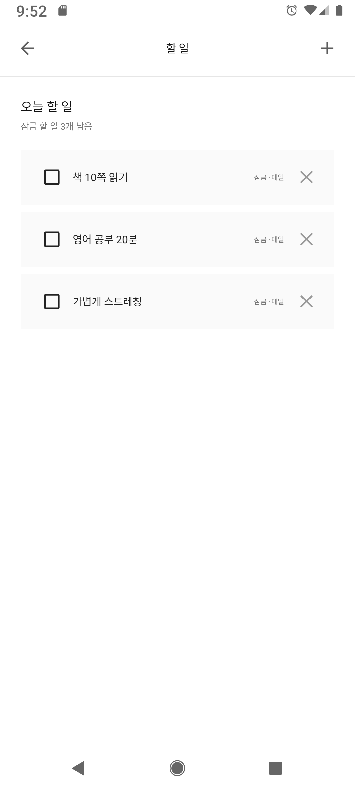
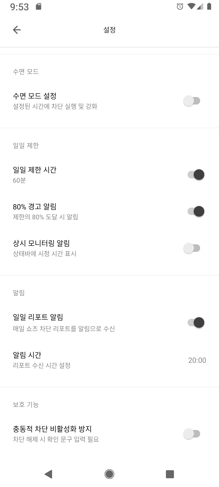

들어가면, 잠깐 멈춤
선택한 앱의 쇼츠·릴스 화면을 감지하면 차단 화면이 나타납니다. 앱 전체를 지울 필요는 없어요.
답장만 하려다, 또 릴스를 보고 있나요?
필요한 앱은 그대로 두고
무심코 보는 쇼츠와 릴스만 잠깐 멈추세요.
Android · 무료로 시작 · 광고 및 인앱 구매 포함
잠시 생각해보기
폰을 뒤집고 잠깐 기다려주세요.
지금 당신에게 필요한 건 무엇인가요?
좋아요.
내 시간으로 돌아가요.
버튼을 눌러 차단 흐름을 체험해 보세요.
웹 체험용 재구성 · 30초 대기를 6초로 단축
실제 앱은 기기의 뒤집힘을 감지합니다.
필요한 앱은 그대로,
짧은 영상 앞에서만.
A LITTLE PAUSE, A BETTER CHOICE
01 / 작동 방식짧은 대기와 폰을 내려놓는 동작으로
자동으로 넘기던 순간을 의식적인 선택으로.
선택한 앱의 쇼츠·릴스 화면을 감지하면 차단 화면이 나타납니다. 앱 전체를 지울 필요는 없어요.
폰을 뒤집어 내려놓은 동안 타이머가 진행됩니다. 다시 들면 멈춰요. 기본 대기는 30초입니다.
잠깐의 대기 뒤에 다시 물어봅니다. 정말 필요한 영상인지, 지금은 그만 볼지 직접 선택하세요.
MAKE ROOM FOR YOUR DAY
02 / 나에게 맞는 설정읽으려던 책, 오늘의 공부, 가벼운 스트레칭.
먼저 할 일을 등록하고 완료한 뒤
시청 대기 단계로 돌아오세요.
매일·평일 반복을 지원합니다.
화면의 할 일은 촬영용 예시입니다.

취침 시간에는 수면 모드로 차단을 강화하고,
하루 시청 시간은 일일 사용 제한으로 관리하세요.
‘바로 보기’ 버튼도 숨길 수 있어요.
화면의 시간과 한도는 설정 예시입니다.

Instagram, YouTube, Threads, Facebook 홈 피드 차단을 별도로 켤 수 있어요. Beta
일별·시간대별 시청 통계와 리포트 알림으로 언제, 얼마나 보는지 돌아보세요.
READY WHEN YOU ARE
설정은 내게 맞게,
멈춤은 필요한 순간에.
Android 기기의 Google Play에서 무료로 시작하세요.
화면 감지와 차단을 위해 접근성 서비스와 다른 앱 위에 표시 권한이 필요합니다.
쇼츠나 릴스를 열어 차단 화면이 나타나는지 확인하세요.
un:short는 지원하는 쇼츠·릴스 화면을 감지해 차단합니다. 홈 피드 차단은 별도 Beta 설정으로 선택할 수 있어요. 대상 앱의 버전이나 화면 구조에 따라 감지가 달라질 수 있으므로 설치 후 작동을 확인해 주세요.
대기 타이머는 폰을 뒤집어 둔 동안 진행되고, 다시 세우면 멈춥니다. 기본 대기 시간은 30초이며 설정에서 조절할 수 있어요. 그만 보기를 선택해 돌아가거나, 설정과 이용 한도에 따라 ‘바로 보기’를 사용할 수도 있습니다.
무료로 시작할 수 있으며 광고와 인앱 구매가 포함됩니다. 무료 이용 시 즉시 보기 횟수에 일일 한도가 있어요. 프리미엄 혜택과 현재 가격은 앱의 구매 화면에서 확인할 수 있습니다.
사용자가 선택한 앱에서 쇼츠·릴스 및 홈 피드 화면과 스크롤을 감지하고 차단 흐름을 제어하기 위해 필요합니다. 권한은 Android 설정에서 언제든 해제할 수 있습니다.
시청 통계와 할 일 정보는 기기에 저장됩니다. 광고, 결제, 사용 분석, 오류 진단, 기능 설정 수신에는 네트워크 통신이 발생할 수 있습니다. 자세한 데이터 처리 내용은 Google Play 등록정보에 연결된 개인정보처리방침을 확인해 주세요.
현재 소개하는 un:short는 Android 앱입니다. Android 8.0 이상에서 사용할 수 있으며, 기기와 대상 앱 버전에 따라 동작이 달라질 수 있습니다.